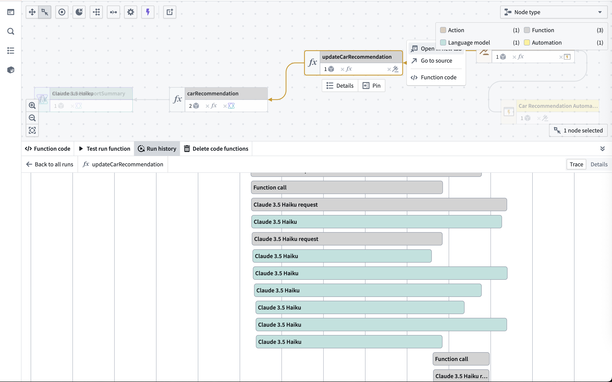

Performance monitoring and optimization
Ontology and AIP observability provides comprehensive tools to monitor, analyze, and optimize the performance of your workflows and AIP applications. By leveraging trace data, execution metrics, and detailed logs, you can identify bottlenecks, optimize resource usage, and ensure your applications run efficiently at scale.
Why performance monitoring matters
Performance monitoring is crucial for:
- User experience: Slow workflows can frustrate users and reduce adoption.
- Cost efficiency: Optimized workflows use fewer resources and reduce compute costs.
- Reliability: Identifying performance issues early prevents outages and failures.
- Scalability: Understanding performance characteristics can help you plan for growth.
Identifying performance issues
You can use the trace view to identify slow operations.
- Long-running spans: Look for operations that take significantly longer than others.
- Sequential bottlenecks: Identify operations that could potentially run in parallel.
- Repeated operations: Find redundant calls that could be optimized.
- Model latency: Monitor LLM response times and consider using different models for time-sensitive operations.
In the screenshot below, you can see an example of Ontology and AIP observability helping identify unbatched model calls that could be optimized.

Optimization strategies
- Parallel execution: When possible, design workflows to execute independent operations concurrently.
- Model selection: Balance performance and quality by choosing appropriate models for each task.
- Batch operations: Group similar operations to reduce overhead.
- Error handling: Add proper error handling to prevent cascading failures.